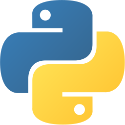
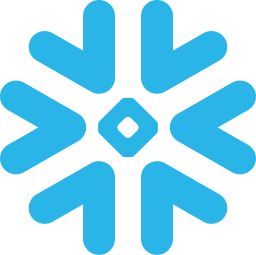
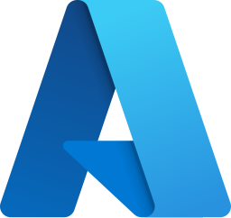
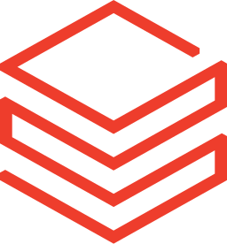
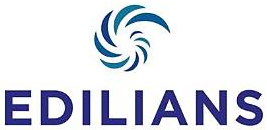
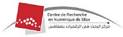
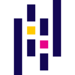

01Langages de programmation
Écriture de scripts, traitement et analyse de données, automatisation des processus.
- Python
- SQL
- DAX
- Shell
Data Engineer & Analytics Engineer
Je conçois et implémente des solutions data fiables et scalables, de l'ingestion à la visualisation, pour répondre à des besoins métiers concrets.
Découvrir mes projets
Python
Snowflake dbt
dbt Power BI
Power BI
Azure
DatabricksÀ propos
Je suis Glenne Poaty, Data Engineer & Analytics Engineer, passionnée par la donnée et ses applications concrètes. J'aime concevoir des solutions fiables et scalables qui transforment des données brutes en informations exploitables, au service de la prise de décision.
Découvrir mon parcoursMa mission
Je crois en une data fiable, bien structurée et accessible, qui permet aux organisations de mieux comprendre leur activité et d'agir plus efficacement. Mon ambition est de développer des solutions data robustes, tout en évoluant dans des projets qui ont un impact concret.
Mes valeurs
Comprendre des problématiques complexes et les simplifier.
Produire des solutions fiables, maintenables et scalables.
Apprendre en continu et explorer de nouvelles approches.
Créer de la valeur pour les utilisateurs et les organisations.
Je suis une personne curieuse, organisée et toujours en quête de nouvelles choses à apprendre. En dehors du travail, j'aime :
Pour garder un bon équilibre
Pour apprendre autrement
Pour découvrir et m'inspirer
Pour exprimer ma créativité
Mon parcours
Une formation solide et des expériences concrètes qui m'ont permis de développer une expertise en data engineering, analytics et gestion de projets, avec une vision orientée business.
Des fondations solides pour une expertise métier
 {EPITECH}
{EPITECH}
Spécialité Data & Business Intelligence
Formation axée sur le data engineering, l'intelligence artificielle, l'analyse de données, la transformation des systèmes d'information et la gestion de projets, avec une vision globale de la data dans le contexte de l'entreprise. Projets concrets et cas d'usage orientés métier.
École Supérieure Privée d'Ingénierie Numérique (ESPIN)
Acquisition d'une solide base en informatique, statistique et probabilités, avec une spécialisation en Business Intelligence. Découverte de la data et de ses applications à travers différents projets académiques, ainsi qu'une initiation au management et aux outils BI.
Des projets concrets au service de données utiles

EDILIANSContribution à la modernisation progressive de la plateforme décisionnelle : transition de Semarchy xDI / SQL Server / SAP BusinessObjects vers Informatica IICS / Snowflake / dbt / Power BI.
Participation au développement d'une application dédiée au recyclage et à la valorisation des déchets.

CRNSContribution à un projet de traitement automatique du langage naturel (NLP) appliqué aux dialectes africains.
Mes projets
Mes compétences
Des compétences complémentaires qui me permettent d'intervenir sur l'ensemble de la chaîne de valeur data, de l'ingestion des données à la visualisation, avec une approche orientée métier.
Écriture de scripts, traitement et analyse de données, automatisation des processus.
Conception, interrogation et gestion de bases de données relationnelles et NoSQL.
 SQL Server
SQL Server PostgreSQL
PostgreSQL MongoDB
MongoDBIngestion, transformation, modélisation et orchestration des données.
dbt n8n
n8nStockage, traitement et exploitation des données dans le cloud.
Analyse exploratoire, création de reporting et de tableaux de bord interactifs.
Power BIExploration de données, modélisation et évaluation de modèles.
 scikit-learn
scikit-learn
Pandas NumPy
NumPy Jupyter
JupyterOrganisation et suivi des activités, documentation et coordination des tâches.
 Trello
Trello Notion
NotionSuivi des développements, gestion des versions et collaboration dans un environnement d'équipe.
 Git / GitHub
Git / GitHubUne approche orientée business et une bonne compréhension des enjeux métiers.
Contact
Vous avez une question, une opportunité ou simplement envie d'échanger autour de la data ? N'hésitez pas à me contacter !
07 51 19 78 54
phaniepoaty@gmail.com
linkedin.com/in/glenne-poaty-08a336215
À bientôt !